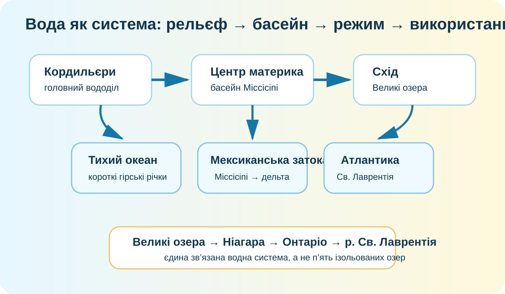

1. Проблема: куди «тікає» вода?
Висуньте гіпотезу: чому з центральної частини Північної Америки більшість великих річок спрямовані до Мексиканської затоки, а на заході багато річок коротші й стрімкіші?
2. Реальна карта: знайдіть вододіли
Кордильєри: знайдіть смугу високих гір уздовж заходу.
Міссісіпі: простежте шлях до Мексиканської затоки.
Великі озера: знайдіть вихід через р. Св. Лаврентія до Атлантики.
Відкрити карту басейнів USGS ↗ USGS Water Data ↗

USGS Water Science School, public domain. Карта показує великі водозбірні басейни Північної Америки.
3. Міссісіпі: режим — це не «характер річки», а відповідь на клімат
Складіть причинний ланцюг
Натискайте чинники й пояснюйте, як вони можуть діяти разом.
Перевірка реальними даними
Відкрийте USGS National Water Dashboard і знайдіть ділянку басейну Міссісіпі. Порівняйте поточний стан з картою басейну.
4. Великі озера: п’ять водойм чи одна система?
Порівняйте карту з супутниковим знімком. NASA показує, як тала вода, річки, вітер і течії переносять завислі частинки між прибережними зонами Великих озер — тобто система активно обмінюється речовиною та енергією.
Супутникові дані NASA
Зверніть увагу на західну частину Ері: мілководдя й надходження осадів роблять його особливо чутливим.
Чому це система?
Вода послідовно проходить через озера й річкові протоки, а далі через річку Св. Лаврентія потрапляє в Атлантичний океан.

5. Ніагара: чому водоспад саме тут?
Вода з озера Ері прямує до озера Онтаріо через річку Ніагара. Різниця висот між озерами та стійкість порід контролюють профіль русла і положення водоспаду.
Питання-пастка
Чи достатньо великої кількості води для утворення високого водоспаду?
6. Коротке відео: побачити систему з орбіти
ESA Earth from Space: Great Lakes.
7. Ваш висновок перед теорією
9. CER: доведіть тезу
Теза: «Водні ресурси Північної Америки визначаються не просто кількістю опадів, а взаємодією рельєфу, клімату й будови басейнів».
10. Домашнє завдання
§45. Оберіть один об’єкт: Міссісіпі, Колорадо, Маккензі або Великі озера. Створіть «паспорт водної системи» з 5 пунктів: басейн стоку, джерело живлення, режим, господарське використання, одна екологічна проблема.
Електронні підручники ІМЗО ↗ NASA Worldview ↗ Copernicus Browser ↗
11. Підсумковий тест — 10 балів
Тест відкриється лише після введення прізвища, імені та класу.